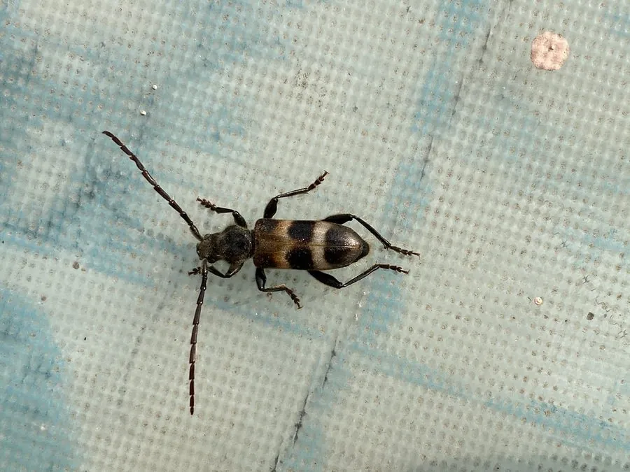

昆虫 · 动物界
双条杉天牛 Semanotus bifasciatus

体黑褐、鞘翅上有两条黄褐色横带的蛀干天牛，幼虫专蛀侧柏与圆柏的枝干，是北方古柏与园林的重要害虫。
- 分类
- 门节肢动物门纲昆虫纲目鞘翅目科天牛科属杉天牛属
- 栖息环境
- 侧柏、圆柏、扁柏成片的园林、寺庙、墓地和林地
- 地理分布
- 中国华北、东北和华东
- 保护级别
- 尚无保护级别；为北方柏树的重要蛀干害虫
物种志
双条杉天牛的体长约一厘米，体形扁长，体色黑褐至黑，前胸背板宽而略扁，两侧有圆弧，鞘翅上各有一条宽阔的黄褐色横带，两条横带左右相连，像给鞘翅扎了两道浅色的腰带，双条杉天牛之名由此而来。它的鞘翅表面还有细密的刻点和短毛，触角约为体长的一半，足短而粗。雌虫体型略大，腹部末节常露出鞘翅之外。
它分布于中国华北、东北和华东，栖息在侧柏、圆柏、扁柏成片的园林、寺庙、墓地和林地，成虫在春季羽化，白天在树干上活动，取食树皮和嫩枝，幼虫蛀入枝干内部，在木质部中凿出曲折的隧道，导致枝干枯死，是北方古柏和园林柏树的重要害虫，一年发生一代，以幼虫在枝干内越冬。它尚无保护级别，防治以修剪虫枝、树干涂白和释放天敌为主。
形态与习性
- 体长约一厘米，体形扁长，黑褐色
- 鞘翅各有一条黄褐色宽横带，左右相连
- 寄主幼虫专蛀侧柏、圆柏、扁柏的枝干
- 危害隧道凿于木质部，导致枝干枯死
- 发生世代一年一代，以幼虫在枝干内越冬
- 防治修剪虫枝、树干涂白、释放天敌
趣味知识
- 它鞘翅上两条浅色横带左右连通，像扎了两道腰带。
- 幼虫一辈子几乎都住在柏树干部，把木头凿成弯曲的隧道。
- 古柏和寺庙里的柏树最怕它，一棵树往往被几只幼虫同时蛀空。